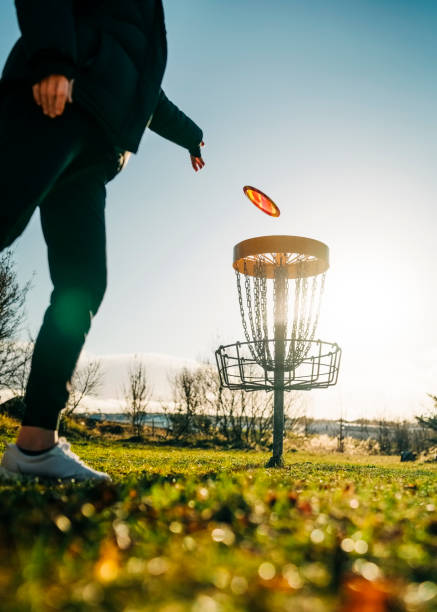

Welcome to The Flying Disc Hub
Discover the exciting world of disc golf at The Flying Disc Hub! Whether you're a seasoned pro or just starting out, this site is your go-to resource for everything disc golf. Explore local courses, stay updated on upcoming events, learn tips to improve your game, and calculate your throw distances with our interactive tools. Join us as we celebrate this fun and growing sport!
About Disc Golf
Disc golf is a rapidly growing sport that combines the precision of golf with the fun of throwing a flying disc. Played on courses that feature a series of baskets, the objective is to complete each hole in the fewest number of throws. Disc golf is accessible to people of all ages and skill levels, requiring minimal equipment and offering a low-cost, environmentally friendly way to enjoy the outdoors. Whether you're competing in tournaments or playing casually with friends, disc golf is a great way to stay active, connect with others, and explore new parks and natural areas. With its mix of strategy, skill, and fun, it's no wonder this sport continues to grow in popularity around the world.
